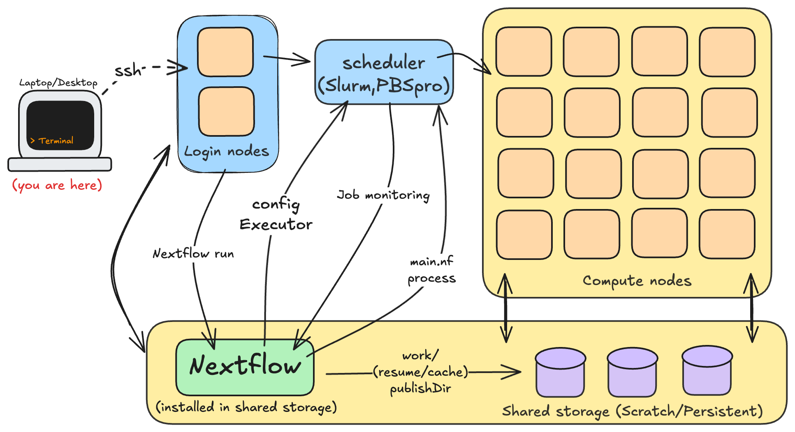
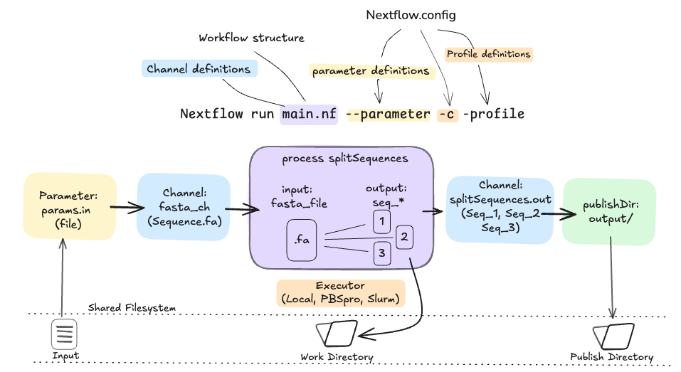
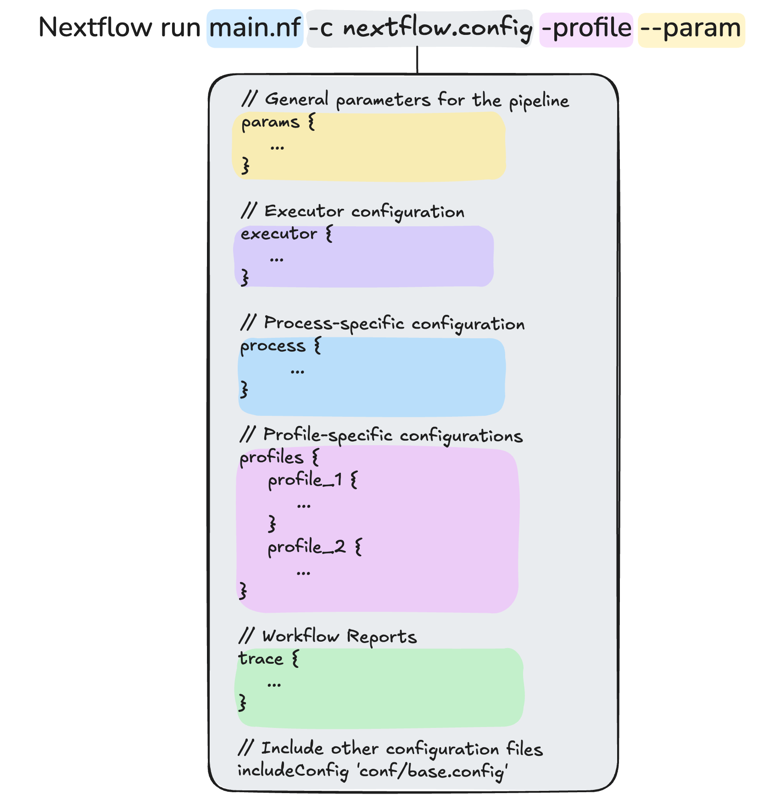

1.5 Running Nextflow on HPC
Learning objectives
- Understand how Nextflow interacts with HPC components
- Learn how executors, queues, and work directories control task execution on HPC
- Run and inspect a simple workflow using a provided HPC configuration
- Identify which parts of a Nextflow config correspond to scheduler options
- Connect HPC principles to the Nextflow workflow management systems.
Nextflow Refresher
Core Concepts
A nextflow pipeline consists of three primary components:
- Processes define what to run. Each process can use any Linux-compatible language (e.g., Bash, Python, R, Perl).
- Channels define how data flows between processes. Channels asynchronously carry data between processes and can fan-out (parallel tasks) or fan-in (merge results).
- Workflows Define the order in which processes connect. They orchestrate execution, specifying dependencies and the overall structure of the pipeline.
Each process runs independently. When a channel contains multiple inputs, Nextflow automatically creates parallel tasks, each running in isolation, connected only by data passed through channels.

Nextflow has a built-in concept called an executor which defines where Nextflow runs the workflow tasks. By default, this is the local executor, which executes all of the tasks on your own computer.
This is great for development and small test runs, but as datasets grow, your laptop quickly runs out of CPU and memory. This is where HPCs come in.
1.5.1 From your laptop to the cluster
Nextflow supports several HPC executors, including pbspro and slurm, which we are using today. In earlier lessons, we saw that HPCs are shared, scheduled, and resource-limited. The HPC executors are set up to work within these constraints by acting as intermediaries between your workflow and the HPC scheduler. Their job is to:
- Prepare a
work/directory within shared storage - Submit the workflow's tasks to the scheduler and request the necessary resources like CPUs, memory, and walltime
- Handle the movement of data between filesystems, including between shared storage and the compute nodes' local filesystems
- Check for job completion and retrieve logs, outputs, and exit codes
- Publish the output data to the shared filesystem

1.5.2 Our first HPC workflow
We'll use a demo workflow, config-demo-nf to see this in action. This workflow contains a single process that splits a sequence into multiple files.

Ensure you have a copy of the example workflow
You should already have a copy of the config-demo-nf directory in your working directory, as it was copied there as part of the setup process.
If it is missing, use the following git command to clone the workflow code base to your working directory now:
1.5.3 Configuring for the scheduler
If we were to run nextflow run config-demo-nf/main.nf right now without any parameters, the workflow would run entirely on the login node. As we've mentioned already, this is not good practice, and we should instead make sure that we are submitting jobs via the HPC scheduler. In Nextflow, we do this by specifying the executor in the Nextflow configuration.
A Nextflow configuration file (nextflow.config or files inside a config/ directory) defines how and where your workflow runs without changing the workflow code itself.

- Executor: Which system to use (e.g.,
local,slurm,pbspro). - Queue: Defines where jobs run within the scheduler (e.g.,
normal,highmem,gpu). - Work Directory: Defines where intermediate files are stored so compute nodes can access them.
- Resources: CPU, memory, and time per process.
- Environment: Modules, containers, or conda environments to load.
- Storage: Where to store temporary and output files.
Configs are powerful on HPC systems, because they are what connect your workflow to the scheduler. They translate Nextflow’s processes into properly submitted batch jobs.
Because configs are separate from the workflow logic, you can:
- Run the same pipeline on laptop, HPC, or cloud by changing only the config.
- Tune performance by adjusting resources or queues per process
- Adapt workflows to site-specific environments (modules, scratch paths, queue names)
- Share portable workflows that others can run on their HPC without code changes
In short, configs are what make Nextflow workflows portable, scalable, and cluster-aware.
Exercise: Running the workflow on the compute nodes
We have pre-made a very simple configuration file, pbspro.config, that will allow the example Nextflow pipeline to run on Gadi. Go ahead and run the workflow with the pbspro.config configuration file using the -c pbspro.config option. You will also need to define a new parameter: pbspro_account and pass it the project ID (vp91):
We have pre-made a very simple configuration file, slurm.config, that will allow the example Nextflow pipeline to run on Setonix. Go ahead and run the workflow with the slurm.config configuration file using the -c slurm.config option. You will also need to define a new parameter: slurm_account and pass it the project ID (courses01):
The output of your command should look something like this:
Notice that the executor matches your HPC’s system: slurm on Setonix or pbspro on Gadi.
What does each line mean?
- The version of Nextflow that was executed
- The script and version names
- The executor used (
pbsproorslurm) - The process that was executed once, which means there is one task. The line starts with a unique hexadecimal value, and ends with the task completion information
Note: We typically don't run nextflow on the login node
We've made a point to avoid Nextflow running the individual processes on the login node, but we're still running nextflow run on the login node. This is OK for tiny workflows like this, and we're doing it this way for clarity and simplicity for the purposes of the workshop. However, there are a few reasons to avoid doing this:
- While not a computationally-intensive process, the main Nextflow script is still a long-running job that uses up some login node resources.
- Long-running jobs will get killed when you log out of the HPC, unless you use additional tools like
nohup,screenortmuxto keep them running in the background. But, large HPC systems often have multiple login nodes that you will be randomly assigned to, and not all let you specify the exact one to connect to, meaning background jobs can get 'lost'.
Both Gadi and Setonix provide a solution to this. Gadi has a special service called persistent sessions that let you create long-running jobs like Nextflow workflows, leave them running in the background (again, with tools like screen and tmux), disconnect, and reconnect at a later time to check up on their progress. Similarly, Setonix has workflow nodes.
When running your own real-world workflows, you will need to use these nodes to ensure you pipelines don't get killed and don't eat up valuable login node resources.
Task directories and the work/ folder
When you run a Nextflow pipeline, it automatically creates a work/ directory. This is where all computation happens behind the scenes.
Inside this directory, each process execution (or task) runs in its own isolated subdirectory, identified by a unique hash, in the above example, work/6b/e8feb6 (NOTE: your unique hash will be different).
Note
You can execute tree work/ to view the work directory structure.
Here’s what happens inside each task directory:
- Setup: Nextflow stages (copies or links) the input files, plus a small script (.command.sh) that defines what to run.
- Execution: The process runs inside that folder, writing its results there.
- Cleanup: Nextflow collects the output files and makes them available for downstream processes or publishing.
Each directory is independent so tasks don’t share writable space. If one process needs data from another, it’s passed through Nextflow channels, not shared files. This isolation is especially important on HPC systems, where tasks may run on different compute nodes.
1.5.4 Profiles
Another very useful feature of Nextflow is the ability to bundle up configuration options into profiles. This can help to simplify the command line arguments to Nextflow by using the -profile <profile name> syntax, rather than having to provide the path to the relevant configuration file. We have already set up the nextflow.config file to define two profiles, pbspro and slurm, which import the relevant configuraiton files when they are used:
| nextflow.config | |
|---|---|
Exercise: Running the workflow on the compute nodes with profiles
Run the workflow once more, this time using the executor profiles:
The output of your command should be the same as before:
Now that we've recapped the basics of Nextflow and seen how a simple Nextflow pipeline can be run on an HPC, in the next section we will look at how we can start running some more complex workflows on HPCs, and how we can configure them to more efficiently utilise the resources available to them.
Need a break?
We've gone through a lot so far, so before we continue on, feel free to take a break!
Also, if you have run into any issues so far please react with a " No" and we can help out.